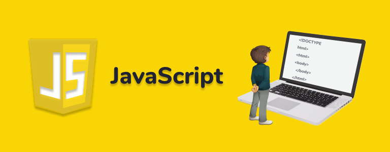

| The HyperText Markup Language or HTML is the standard markup language for documents designed to be displayed
in a web browser. It can be assisted by technologies such as Cascading Style Sheets (CSS) and scripting
languages such as JavaScript. |

|
Cascading Style Sheets (CSS) is a style sheet language used for describing the presentation of a document
written in a markup language such as HTML or XML (including XML dialects such as SVG, MathML or XHTML).[1] CSS
is a cornerstone technology of the World Wide Web, alongside HTML and JavaScript. |

|
| JavaScript (/ˈdʒɑːvəskrɪpt/), often abbreviated as JS, is a programming language that is one of the core
technologies of the World Wide Web, alongside HTML and CSS. As of 2022, 98% of websites use JavaScript on the
client side for webpage behavior, often incorporating third-party libraries. All major web browsers have a
dedicated JavaScript engine to execute the code on users' devices. |

|
Bootstrap is a free and open-source CSS framework directed at responsive, mobile-first front-end web
development. It contains HTML, CSS and (optionally) JavaScript-based design templates for typography, forms,
buttons, navigation, and other interface components. |

|
| React (also known as React.js or ReactJS) is a free and open-source front-end JavaScript library[3] for
building user interfaces based on UI components. It is maintained by Meta (formerly Facebook) and a community
of individual developers and companies. |
|
MUI offers a comprehensive suite of UI tools to help you ship new features faster. Start with Material UI,
our fully-loaded component library, or bring your own design system to our production-ready components. |

|